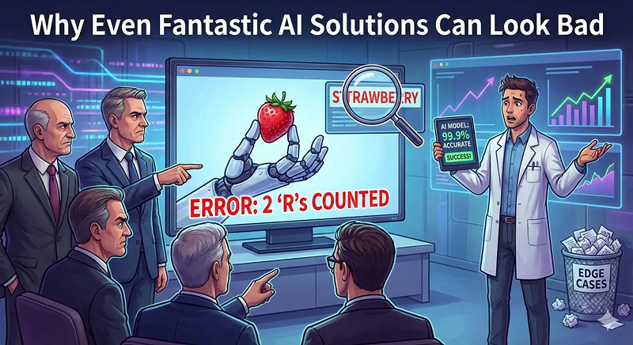

FEB 20, 2026
Why One Silly Mistake Can Derail Your AI Project
Summary: Data scientists measure success in aggregate - accuracy, F1, AUC-ROC. Users measure it in individual moments. A single memorable failure can undo years of technical progress and destroy trust in an otherwise excellent system. Understanding why this happens - and what to do about it - is one of the most underrated skills in AI product development.

Image generated with Nano Banana Pro.
Data scientists and ML engineers evaluate models with aggregate metrics: accuracy, precision, recall, F1-score, AUC-ROC, perplexity (for language models), and more. If the model excels across a large test set, we call it a success. Mistakes are inevitable in any real-world system, but if they're rare enough, we do not worry. After all, even the best make occasional mistakes.
Users and stakeholders, however, don't see datasets or curves. They experience individual examples.
A spam classifier might correctly flag 98% of junk posts, but if it mistakenly labels a legitimate announcement from a trusted news outlet as spam, trust evaporates. One bad call is all it takes.
The LLM Spotlight Problem
Large language models have faced this scrutiny intensely. A classic case: early versions struggled to count the letter R's in "strawberry" - there are three. The error is spectacular in its apparent simplicity. Explaining that LLMs process text via subword tokens (where "strawberry" might split into chunks like "straw" and "berry," obscuring individual letters) rarely helps. Critics laughed: "AI isn't taking over anytime soon."
Never mind the model's genuine achievements across translation, coding, summarisation, and reasoning. One viral failure overshadowed the rest.
This is classic cherry-picking, driven by cognitive biases like the availability heuristic - memorable errors stick far longer than boring successes. But as the person responsible for an AI product, you can't dismiss it. You have to build and maintain trust.
Real-World Examples Beyond LLMs
The issue isn't limited to text classifiers or chatbots. In computer vision, a self-driving system's near-perfect detection rate means little if it once confuses a white truck with a bright sky, nearly causing an accident. In recommendation engines, one wildly off-base suggestion - like surfacing baby products to someone who recently suffered a miscarriage - can make the entire system feel creepy or incompetent, regardless of how well it performs the rest of the time.
The pattern is consistent: the failures that kill trust are not the most frequent ones. They're the most emotionally resonant ones.
What Can You Do About Edge Cases?
Fortunately, many failure modes are addressable. Here are three approaches that actually work:
1. Data augmentation and retraining
Add misclassified or tricky examples to your training set. This is a core idea behind boosting algorithms like AdaBoost, which iteratively focus on hard cases. In one project, I added features like uppercase-to-lowercase ratios to fix a spam classifier's issues with aggressive, all-caps posts on X (formerly Twitter). It dramatically reduced false positives on legitimate content without degrading overall performance.
The lesson: don't just look at where your model fails in aggregate. Look at why it fails on specific examples, and use that understanding to guide your data strategy.
2. Targeted fine-tuning and reasoning improvements
For LLMs, newer reasoning-focused models - such as OpenAI's o1 series (internally codenamed "Strawberry," fittingly enough) - significantly reduced failures on tasks like letter counting by incorporating explicit multi-step reasoning during training. The model learns to think step-by-step internally, spelling out characters and counting deliberately, rather than relying on pattern matching over tokenised input. This overcomes tokenisation limitations without changing the underlying tokeniser itself.
The broader principle: when a failure mode is systematic, the fix is often architectural or training-level, not a patch.
3. Manual safeguards and hybrid systems
For critical edge cases, implement rule-based overrides, post-processing checks, or hybrid systems that combine AI outputs with human review. These aren't elegant, but they protect trust while you iterate toward a more robust solution. In regulated industries or high-stakes domains, this layer of oversight isn't optional - it's the product.
A Mindset Shift for Engineers and Managers
The key takeaway is this: user perception often trumps raw accuracy. Hard metrics absolutely matter - a model must perform well objectively or it's useless. But even a 99% accurate system can fail if people don't trust it enough to use it.
Don't brush off "silly" complaints. Those single examples carry outsized weight because they shape first impressions and spread virally through teams, leadership, and social media. Listen, investigate, and address them proactively. Turn sceptics into advocates by showing you take their concerns seriously - not dismissively pointing at aggregate performance curves.
Building trustworthy AI isn't just about optimising loss functions. It's about aligning with how humans actually judge reliability. Ignore the human side, and your technically excellent system risks looking bad forever.
If this kind of thinking resonates with you, subscribe to the newsletter to get more experience-based insights on AI and machine learning, straight to your inbox.